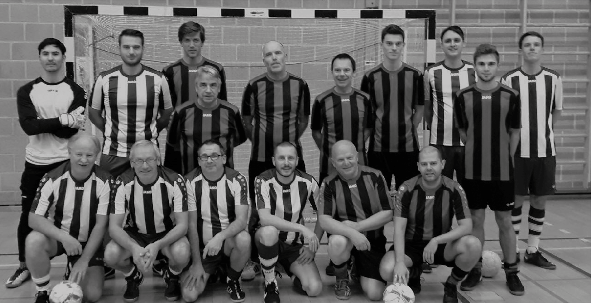
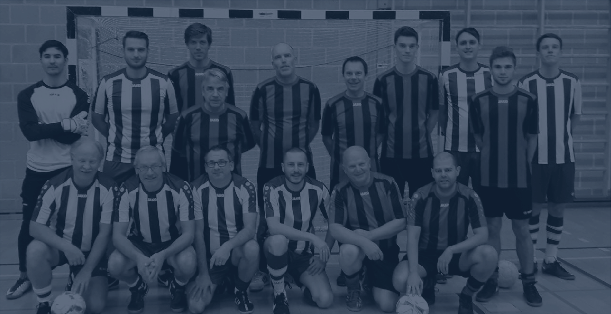

Beeldtaal
Illustraties
Er wordt niet heel veel gebruik gemaakt van illustraties binnen de huisstijl van ZVC Brouwershuis. Er komen illustraties terug in de vorm van een mascotte en de iconen die gebruikt worden bij de signalisatie.
Mascotte
De mascotte van ZVC Brouwershuis is net zoals het logo uitgewerkt in de Amerikaanse stijl. Er wordt net zoals het logo gebruik gemaakt van dikke lijnen en schaduwen. Het is een zeer cartoonistische stijl waar veel schetsen aan voorafgaan om een gewenst resultaat te bekomen. De mascotte is uiteraard ook uitgewerkt in de kleuren van de huisstijl.

Iconen
Voor de iconen wordt in de opbouw verbindingen gelegd tussen cirkels om zo een icoon te bekomen waarbij de lijn zo min mogelijk wordt verbroken.
Voor de lijn van het icoon wordt ook steeds dezelfde Lijn dikte gebruikt.
De uiteinden van de paden worden ook afgerond. Hieronder zien we een voorbeeld van iconen die aanwezig zijn binnen de signalisatie

Fotografie
In verschillende toepassingen binnen de huisstijl van ZVC Brouwershuis wordt gebruik gemaakt van fotomateriaal.
Deze kunnen op verschillende manieren worden toegepast. In de eerste kunnen we gebruik maken van een onbewerkte foto.
Daarnaast kan er gebruik worden gemaakt van een zwart wit versie van het beeld. Dit komt vooral voor bij drukwerk.
Een andere optie die voorkomt bij drukwerk, is de optie waar de foto eerst omgezet wordt daar een zwart wit beeld en dan wordt voorzien van een laag in photoshop in een van de kleuren van de huisstijl. De bedekking van deze kleur wordt dan aan 60% gezet.
